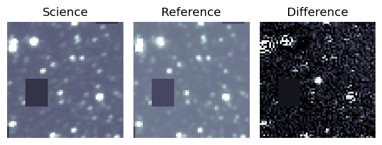
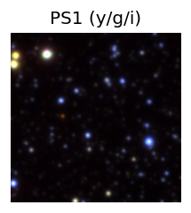
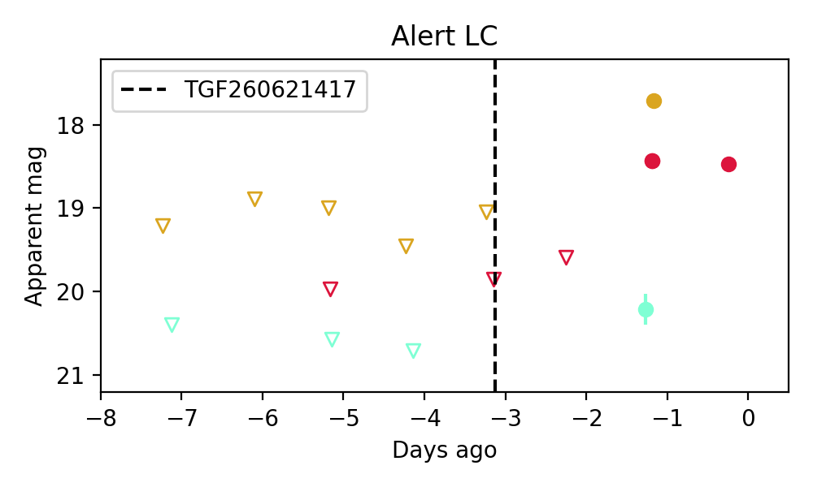

Candidate List 20260624Previous Day Next Day
Section 1: New Sources (age<1d) Section 2: Old (1-5d) sources observed last nightplaceholder
Section 2: Older Sources Observed Last Night (5)
0. ZTF26abcqesk (FBOT?) [Back to Top] [Share] [Trigger Swift] [Fritz] [Lasair]RA, Dec: 252.31072, 55.09314 16h49m14.57s, 55d 5m35.30sGalactic (l, b): 83.40401, 39.25719 ext(g-r) = 0.015


TESS: Sectors [ 16 19 23 24 25 26 49 50 52 53 56 57 59 73 76 77 79 80
83 84 86 117 118]
PS1: 0 sources in 3 arcsec
LegacySurvey: 1 sources in 3 arcsec Closest: d = 0.65 arcsec, 170.1 deg (east of north) photoz=0.37 (68% bounds 0.25, 0.54), type=REX peak abs mag = -23.64 (68% bounds -22.62, -24.61)

Extinction-corrected gr color:
From alerts: 0.08 +/- 0.03 mag
Consistent with synchrotron, g-r>0!
Rise Rate:
g: 0.45 mag/day
r: 0.42 mag/day
i: -99 mag/day
Fade Rate:
g: -99 mag/day
r: -99 mag/day
i: -99 mag/day
1. ZTF26abcswjr (Afterglow?) [Back to Top] [Share] [Trigger Swift] [Fritz] [Lasair]RA, Dec: 289.34479, 1.78097 19h17m22.75s, 1d46m51.48sGalactic (l, b): 37.48795, -4.95095 ext(g-r) = 0.483


TESS: Sectors [54 80]
PS1: 0 sources in 3 arcsec
LegacySurvey: 0 sources in 3 arcsec

Extinction-corrected gr color:
From alerts: -0.47 +/- 0.18 mag
Extinction-corrected gi color:
From alerts: -0.26 +/- 0.1 mag
Extinction-corrected ri color:
From alerts: 0.04 +/- 0.09 mag
Consistent with synchrotron, g-r>0!
Rise Rate:
g: 0.87 mag/day
r: 1.2 mag/day
i: 0.75 mag/day
Fade Rate:
g: 0.13 mag/day
r: 0.09 mag/day
i: 0.11 mag/day
2. ZTF26abdbeqv (FBOT?) [Back to Top] [Share] [Trigger Swift] [Fritz] [Lasair]RA, Dec: 281.32661, 49.88352 18h45m18.39s, 49d53m0.66sGalactic (l, b): 79.17755, 21.34898 ext(g-r) = 0.051


TESS: Sectors [ 15 26 40 41 53 54 55 74 75 79 80 81 82 86 118 119 120]
PS1: 0 sources in 3 arcsec
LegacySurvey: 1 sources in 3 arcsec Closest: d = 0.77 arcsec, 178.7 deg (east of north) photoz=0.71 (68% bounds 0.25, 1.04), type=REX peak abs mag = -24.1 (68% bounds -21.38, -25.12)

Extinction-corrected gr color:
From alerts: -0.5 +/- 0.06 mag
Rise Rate:
g: 0.56 mag/day
r: 0.54 mag/day
i: -99 mag/day
Fade Rate:
g: -99 mag/day
r: -99 mag/day
i: -99 mag/day
3. ZTF26abdpfno (Afterglow?) [Back to Top] [Share] [Trigger Swift] [Fritz] [Lasair]RA, Dec: 278.02826, -19.99912 18h32m6.78s, -19d-59m-56.84sGalactic (l, b): 12.95021, -4.90556 WARNING: 3.23 deg from ecliptic plane ext(g-r) = 0.761


TESS: Sectors [ 92 116]
PS1: 1 source in 3 arcsec Closest: d = 2.20 arcsec photoz=0.62+/-0.35 peak abs mag = -26.39
LegacySurvey: 0 sources in 3 arcsec

Extinction-corrected gr color:
From alerts: 1.02 +/- 0.19 mag
Extinction-corrected gi color:
From alerts: 1.33 +/- 0.19 mag
Extinction-corrected ri color:
From alerts: 0.31 +/- 0.07 mag
Consistent with synchrotron, g-r>0!
Rise Rate:
g: 0.17 mag/day
r: 1.09 mag/day
i: 0.64 mag/day
Fade Rate:
g: -99 mag/day
r: -99 mag/day
i: -99 mag/day
4. ZTF26abdtjxx (Afterglow?) [Back to Top] [Share] [Trigger Swift] [Fritz] [Lasair]RA, Dec: 337.51524, -2.07901 22h30m3.66s, -2d-4m-44.45sGalactic (l, b): 63.34942, -47.90374 ext(g-r) = 0.052


TESS: Sectors [70 92]
SDSS (<15 kpc):Found SDSS phot-z: z=0.13; peak abs mag = -19.00
PS1: 0 sources in 3 arcsec
LegacySurvey: 1 sources in 3 arcsec Closest: d = 1.16 arcsec, 118.2 deg (east of north) photoz=0.13 (68% bounds 0.12, 0.14), type=SER peak abs mag = -18.87 (68% bounds -18.69, -19.01)

Extinction-corrected gr color:
From alerts: -0.29 +/- 0.22 mag
Extinction-corrected gi color:
From alerts: -0.09 +/- 0.23 mag
Extinction-corrected ri color:
From alerts: 0.2 +/- 0.27 mag
Consistent with synchrotron, g-r>0!
Rise Rate:
g: 0.51 mag/day
r: -99 mag/day
i: -99 mag/day
Fade Rate:
g: 0.32 mag/day
r: -99 mag/day
i: -99 mag/day